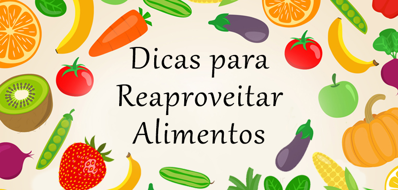

Aqui vamos ensinar vocês de como reaproveitar comida de uma forma leve e saudável .
Após as refeições, a grande maioria das pessoas joga fora o que sobrou da comida. Isso acontece também após o consumo de frutas e demais vegetais. Mas já está se popularizando a ideia de que esses resíduos aparentemente inúteis podem ser aproveitados de diversas maneiras, para evitar o desperdício.
* receitas